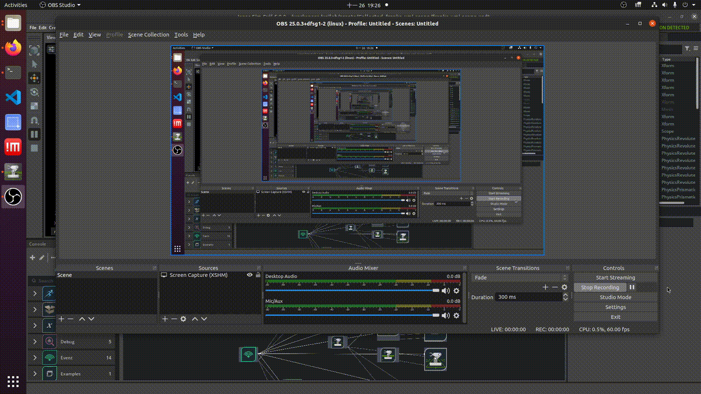
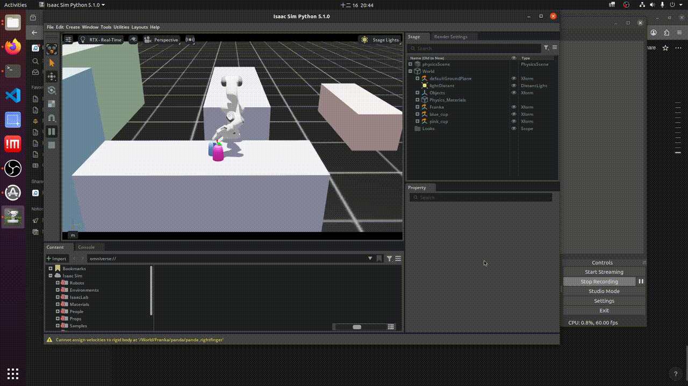

UMI Reproduction
Goal
To reproduce UMI (Universal Manipulation Interface), a data collection methodology, integrate to IsaacSim.
Challenges
- Official implementation doesn’t support latest GoPro13 devices:
- GoPro13 latest format causing official IMU extraction failure.
- In-accurate intrinsics, extrinsics, noise parameters causing SLAM failure.
- The business logic is currently hard-coded exclusively for the GoPro9.
- GoPro13 latest format causing official IMU extraction failure.
- IsaacSim V5.1.0 integration, to validate the collected data, trained policy, inferencing stacks right in the simulator.
- Validate the collected data: Replay the extracted trajectories right in the simulator ( where should this section be?)
- Validate the collected data: Replay the extracted trajectories right in the simulator ( where should this section be?)
- Train a policy model on cutting-task
- Design a task-specific collection device for such cutting tasks, relies on CORE.
What worked
Note: The following outlines the successful implementation of the aforementioned challenges.
GoPro13 latest format causing official IMU extraction failure
- Integrated latest sensor data extraction library.
In-accurate intrinsics, extrinsics, noise parameters causing SLAM failure
- Calibrated GoPro13 to obtains the following values:
- Camera intrinsics parameters
- IMU noise calibration
- IMU frequency
- Camera intrinsics parameters
The business logic is currently hard-coded exclusively for the GoPro9.
- Re-implemented UMI processing pipeline in a separate repository, voilab, contains:
- The new UMI implementation is designed for extensibility, enabling flexible integration of new processing logic such as alternative SLAM or others.
- Data visualization tools
- URDF viewer
- The new UMI implementation is designed for extensibility, enabling flexible integration of new processing logic such as alternative SLAM or others.
More on the new design of the UMI pipeline. A YAML-based pipeline configuration, each stage corresponding to a service such as SLAM, Aruco detection service, etc. This design enables the ease of extension as discussed above. For example, the current SLAM service is based on the implementation ORB_SLAM3, we could easily swap for other SLAM method such as Realsense T265 built-in Visual SLAM.
IsaacSim V5.1.0 integration, to validate the collected data, trained policy, inferencing stacks right in the simulator.
- Containerized IsaacSim V5.1.0 into the repository allowing ease of installation, development.
- Integrated ROS2, the goal is to streamline the policy deployment on simulation and real-world environments. It comes with a cost, which will be discussed later in the “Technical debt” section.
How does ROS help reduce the deployment and maintenance efforts?
Claim: Streamlining the deployment process can help reduce the development and maintenance effort.
Isaac Sim v5.1.0 provides native ROS 2 support, enabling seamless communication with the simulator. This allows the inference stack to be shared between the simulation and real-world deployments.
- Be able to test and iterate the inference pipeline in the simulation environment, then deploy directly to real hardware.
IsaacSim’s action graph utilization
IsaacSim supports ROS2 natively via the “Action Graph” layer. This is a place to define a graph containing nodes that publishes sensor information or subscribes to certain ROS topics and acts upon the received commands. In the example of controlling the robotic arm, certain nodes are needed:
- A subscriber node: subscribes to a topic of joint positions
- A controller node: controls the robotic arm by joint positions commands
Such design could help future robotic arm swapping easily without being bound by any components.
Real-world trajectory replay inside IsaacSim simulator
At the start of the human demonstration collection stage of the UMI method, a world-coordinate calibration is needed, which is recording an Aruco tag placed on the surface which is treated as world coordinate in upcoming human demonstration trajectories recording. UMI pipeline would later transform extracted trajectories from ORB_SLAM3 to this tag frame. To replay it, we must transform all waypoints from that Aruco tag frame to the simulation world frame.
Implementation details:
All waypoints of each trajectory are end-effector pose, to have the robotic arm in the simulation replayed such waypoints, there are few processing steps to follow:
- Transform waypoints from original tag-frame to simulation world frame
- Convert waypoints in end-effector pose to joint positions which eventually moves the robotic arm.
- IsaacSim built-in ArticulationKinematicsSolver was used
Version control for simulation assets.
Git was employed in order to manage the version of simulation assets enabling the ease of collaboration work across a team.
What didn’t
Note: This section outlines failures, discussing what could be done better in future works.
Grasping failure in the simulation environment
The robotic arm was unable to grasp the objects in the simulation environment while replaying the collected trajectories in the real-world environment. There is an on-going investigation on this issue, the followings were tried but didn’t have effects.
- Configure the franka-grippers and objects with rigid body and collider
- Replaced the UMI-gripper Franka with the official one but the grasping issue wasn’t resolved
Trajectory intervention
There are certain biases in object reconstructions, trajectories extraction from SLAM. These accumulated biases led to inaccurate robotic arm movements. To mitigate this issue, an intervention methodology was employed. The idea was to intercept the original trajectory when certain conditions were met, close to objects, the gripper width was in a certain range, etc. However, this intervention could potentially disrespect the real-world trajectory. Taking the cup-stacking as an example, the human-expert was intended to present certain failures before actually grasping the cup. This intervention method patches those failures with the synthetic, ad-hoc trajectory. Eventually, this type of method just broadens the sim-real gap rather than solving the issue as it was originally designed. We shouldn’t solve the problem at this layer but from the very first principle, detect and eliminate those biases.
Adaptations for the Physical AI course
Task-Specific scene loading and initialization
There are 3 specific environments: kitchen, dining room, living room. Objects, robotic arm positions are completely different from each environment. To let users, students could load up the target environment and corresponding objects. We constructed a base environment of ED305 and employed registry-based design, an environment corresponding to a registry. In a registry, we define objects to be loaded, robotic arm positions, Aruco tag positions, world-camera positions, etc. At initialization of specific environment, the script does the following:
- Loads the base environment.
- Sets the robotic arm, world-camera at specified positions.
- Finally, load all required objects.
Object reconstructions in the simulation environment
All target objects are identified by Aruco tags which embed the translations and rotations vectors of objects. Such information is later used to initialize simulation assets into the simulation environment.
There is a transformation step before serializing these vectors to files, transforming the translations and rotations from camera-frame to tag-frame as same as the trajectories.
To integrate such business logic into the original UMI pipeline, we only need to implement it as a new service and wire it to the pipeline.
Replacing real-world observations with simulation observations
To enable policy learning entirely within the simulator while maintaining consistency with real-world trajectories, real-world visual observations captured at each waypoint are replaced with corresponding simulation-rendered RGB images. This observation substitution allows imitation learning to be performed and policy model deployment in simulation.
Trade-offs were made
- Eliminated ROS2: the ROS2 stacks required complicated multi-container communications which is unnecessary in the scope of this course.
- Replaced real-world collected trajectory with motion-planning: Due to grasping failure, the synthetic motion planner was employed to generate a completely new trajectory from start to end.
Technical Debts
Grasping Workarounds and Limitations
The existing implementation contains a temporary grasping workaround that introduces technical debt in the system. Because the robotic arm is unable to consistently achieve a stable physical grasp, the object is artificially constrained to the gripper through a multi-step procedure during motion execution. This mechanism facilitates simulation replay but violates physical realism, causing the approach to fail when applied at policy inference time.
Future Works
- Resolve the grasping failure
- Build visualization tools around the UMI pipeline for sanity checks purposes, allowing us to eliminate biases from the early stage.
Appendix:
Why not use IsaacLab?
IsaacLab offers higher-level APIs, workflows, and robotics-oriented abstractions intended to simplify robot configuration, environment definition, and the execution of learning algorithms. In this project, however, these abstractions are unnecessary, as the required functionality is limited to the core simulation environment. Dynamic environment setup is already addressed through base environment initialization and a registry-based design, making the additional IsaacLab abstraction layer redundant for our use case.
How did the clunky arm movements issue get solved?
This issue occurred due to the under-tuned physical properties for the Franka asset, such as damping, stiffness, and target positions of each joint at stand-by mode.
Docker-based SLAM processing
UMI relies on the ORB-SLAM3 visual SLAM algorithm for trajectory extraction. Since ORB-SLAM3 is a C++ project requiring independent build and compilation steps, a quick and dirty workaround was implemented by containerizing the algorithm and invoking it via subprocess calls from a service layer. This approach complicates debugging and long-term maintenance and is therefore suboptimal for a Python-centric codebase. Future work will focus on integrating ORB-SLAM3 through native bindings.
Real-world inference stack
One of the downsides of GoPro devices is not supporting real-time video streaming, a crucial feature to enable policy model deployment in the real-world. The UMI official states that using an external video-stream capture card + GoPro media mods could help solve the issue.
IK solvers selection
Many existing Inverse Kinematics (IK) solvers present significant challenges for software deployment, often requiring operating system-level dependencies or being tightly integrated with the ROS ecosystem. This approach is problematic because it leads to bloated Docker containers, complex dependency management, and unpredictable behavior across different operating systems. We ended up using IsaacSim built-in IK solver, ArticulationKinematicsSolver.
We evaluated several IK solvers, with the following results:
| Solver | Notes |
|---|---|
| cuRobo | Docker installation proved to be a major hurdle, resulting in an excessively large container. |
| Ikpy | Ease of installation due to its management via pip. |
| Moveit2 | Its ROS-bound installation created conflicts with our custom-built ROS2 version within IsaacSim, leading to another significant deployment issue. |
Closing Thoughts
The goal of replaying trajectories in simulation is to train and evaluate the policy in the simulator by replacing the real-world observations with simulations. The simulation-observations dataset is later used to train the diffusion policy model I may need to take a step back, is replaying trajectories and replacing observations with simulations the only way? What i’m trying to do is to reduce the observations gap between training and inferencing by keeping the observations consistent. If we could ensure the observations consistency between real-world and simulation then the simulator could be used to do 1. synthetic data generation: using motion planning 2. validate, evaluate the trained policy in simulator
Recorded Demos (GIFs)
Human expert demonstration 
First attempt in IsaacSim 
Trajectory successfully replayed but failed to grasp 